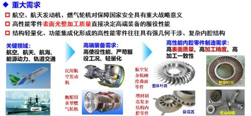
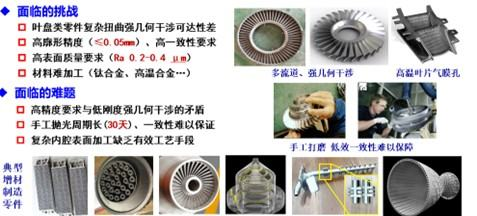
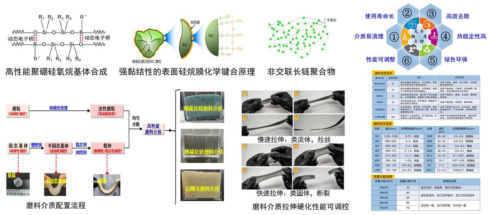

随着航空航天、能源、化工等领域高性能装备制造技术要求的不断提高，涌现出一大批高使役性能要求的动力传递类零件和金属增材制造一体化复杂结构零件，如航空飞机发动机整体叶盘、叶轮和叶环，大型石化压缩机三元叶轮、航海水下舰船用泵蜗壳、航空航天领域金属增材制造旋流器和燃油喷管等复杂结构零件，是我国急需的大型高端装备中的关重零件。此类零件的共同特点是：使役性能要求高、零件结构强几何干涉、材料难加工、具有内腔或内流道结构特征，此类强几何干涉和内腔表面采用传统的机械加工方法可达性差，甚至无法加工，面临“抛不到”、“抛不好”、“抛不快”的重大技术挑战。在国家科技重大专项、国家自然科学基金等课题资助下，项目团队历时13年产学研合作攻关研究，研发出高性能复杂内腔结构零件磨粒流光整加工技术与成套装备，取得重要创新与突破。
创新点1：提出了高触变性、高稳定性的粘弹性磨料介质制备方法。研发了聚硼硅氧烷基磨料介质制备新工艺，合成了具有高热稳定性的磨料介质基体；揭示了基于致密均匀高分子网络的磨料介质基体触变性构建机理，显著提高了磨粒的分散稳定性；揭示了利用分子间动态电子桥作用实现磨粒表面改性机制，显著增强了磨粒界面结合强度。
创新点2：提出了高滑移、低流阻磨料介质粘弹性流变性能表征与调控方法。设计开发了适用于磨料介质壁面滑移行为表征的测试系统，揭示了润滑剂在剪切力作用下向壁面迁移并形成润滑层是磨料介质壁面滑移的主要原因；揭示了磨粒粒径、磨粒质量分数、添加剂以及基体硼含量对聚硼硅氧烷基磨料介质流变特性的影响规律；通过优选高分子基体相、硬质磨粒相和粘弹性调控添加剂，开发介质化学反应配置形性调控工艺方法，实现了高性能零件内腔表面亚微米级粗糙度高质量镜面抛光。
创新点3：提出了抛光余量均匀调控的磨粒流抛光加工模具形性协同反求设计方法。揭示了磨料介质与加工表面作用机理及界面流变规律，构建了复杂流道几何特征约束下的磨料介质流道流动力学模型，开发出形性协同的磨粒流光整加工模具反求设计方法，解决了传统磨粒流加工“过抛”和“欠抛”难题，实现了内腔结构表面的抛光和复杂结构表面的精准控形光整加工。
创新点4：开发出回转类零件磨粒流抛光去毛刺、高光泽度表面弹性颗粒磨料介质喷射抛光、内流道表面挤压磨粒流抛光、大型异形壳体零件外表面振动光饰等四大类工艺与装备，实现了航空发动机整体叶盘、复杂内腔金属增材制造件等高性能零件精密抛光和推广应用。
项目成果获授权国家发明专利37 项、发表论文16 篇，形成4 大系列加工机床制备、3 大系列磨料介质产品。以王向明院士和丁汉院士为正副组长的成果鉴定专家组评价：项目技术难度大、创新性强，具有自主知识产权，整体技术达到国际先进水平，其中均匀余量精准调控的磨粒流光整加工模具形性协同设计技术居国际领先。项目研究开发的四大系列磨粒流抛光机床设备和介质产品成功应用于航空航天、船舶、能源等重点行业中，解决了包括航空发动机整体叶盘、叶环零件、大型机匣、金属增材制造旋流器和燃油喷杆内腔等多个国家重点型号工程高端装备关重零件的精密抛光“卡脖子”难题，在精密齿轮、轴承套圈和滚子抛光、各类压缩机挤出机机筒和螺杆、熔喷布喷丝板微孔、注塑模具等民用产品的精密抛光中得到推广应用。项目成果应用近三年实现新增销售20.04 亿元，新增利润3.01 亿元，经济和社会效益突出。
随着航空航天、能源、化工等领域高性能装备制造技术要求的不断提高，涌现出一大批高使役性能要求的动力传递类零件和金属增材制造一体化复杂结构零件，例如航空发动机整体叶盘、叶轮和叶环，大型石化压缩机三元叶轮、航海水下舰船用泵蜗壳、航空航天领域具有内腔或内流道的金属增材制造旋流器和燃油喷管等复杂结构零件，是我国急需的大型高端装备中的关重零件。此类零件的共同特点是：使役性能要求高、零件结构强几何干涉、材料难加工、具有内腔或内流道结构特征，对这些零件的精密光整加工是决定其精度和使役性能的最后一道防线。由于此类强几何干涉和内腔表面采用传统的机械加工方法可达性差，特别是一些复杂的增材制造件内腔表面加工甚至无法加工束手无策，成为亟待解决的卡脖子难题，面临“抛不到”、“抛不好”、“抛不快”的重大技术挑战。
图1国家重大工程需求
磨粒流加工方法作为一种零件表面抛光的工艺方法已经得到应用，然而传统的磨粒流抛光加工技术面对高精度复杂曲面零件和复杂内腔流道表面，存在“欠抛”和“过抛”难题，无法直接用于高性能零件精密光整加工，特别是面临高性能磨粒流抛光介质和高端设备多依赖进口的窘境。
图2面临的技术挑战和难题
本项目针对航空航天航海等领域高端装备高性能复杂内腔结构零件光整加工亟待先进高效工艺手段这一卡脖子技术难题，面向国家重大工程需求，在国家自然科学基金、重点研发计划、GF军工项目等支持下，历时13年产学研用协同攻关研究，发展了磨粒流精密抛光加工理论与方法，设计开发出高性能零件复杂内腔精密抛光用磨粒流介质，发明了磨粒流介质加工形性调控方法，形成了3大系列产品，在此基础上创新设计开发了能够实现自动化磨粒流抛光的工艺装备，解决了多个国家重点型号装备关重零件复杂内腔表面精密抛光难题，技术成果工程应用和推广，取得了显著的经济和社会效益，项目主要技术创新成果概述如下。
（支撑材料：查新报告【证明材料2-1】；学术论文【附件4-3,4】；销售合同【附件4-2】；发明专利【重要成果5,6】;应用证明【附件3-1~3】）
针对国外企业对高可塑性、高稳定性的高性能磨料介质基体技术限制和进口磨料介质价高且军工企业受限的“卡脖子”问题，本项目创新性开发出了一种新型聚硼硅氧烷基体制备方法，突破了国外技术垄断。建立了以高反应活性硅基聚合物和硼化合物为原料、构建新颖的合成策略与技术，有效减少了影响基体稳定性的副产物，合成了高纯度聚硼硅氧烷基体。该基体在长时间尺度下呈现出典型类流体流动和自愈合特性、在短时间尺度呈现典型类固体弹性延展特性，保障介质具备优良的加工性能；基体的聚硼硅氧烷分子链结构难以被水分子穿透，从而减弱了存储条件下水解作用，在长期使用过程中展现了较慢的性能衰减，显著提升了磨料介质的稳定性。
图3 高可塑性、高稳定性磨料介质
针对传统磨料介质在静置或低速工况下易发生磨粒沉降，导致介质均匀性降低、加工性能减弱的问题，本项目提出了以硬脂酸铝作为稳定剂、通过长链烷基在磨料介质基体中形成“桥联-缠绕”三维网络结构，同时强化静置网络强度与剪切响应速度，显著增强磨料介质触变性。在静置及低剪切力条件下,该网络结构能够防止磨粒沉降;而在高剪切力条件下，该网络结构被破坏、介质更易流动；当高剪切力转变为低剪切力时，该网络结构又重建。该创新性研究成果保障了磨料介质体系在静置及低速状态下的稳定性及在工作状态下的流动性，实现了网络结构可逆重构、“静则稠、动则稀”，解决磨料介质磨粒沉降难题。
图4 磨料介质触变性及抗沉降性能
针对磨料介质中磨粒易脱落、导致材料去除能力降低、难清理这一国内外磨料介质共同难题，本项目提出了利用分子间动态电子桥作用，实现了磨粒表面的硅烷化改性，解决了磨粒脱落问题。利用聚硼硅氧烷内部的分子间动态电子桥以及碳化硅表面的硅羟基，提出通过在磨粒表面接枝有机硅烷膜，从而在聚硼硅氧烷分子和有硅烷膜的磨粒之间建立动态电子桥形式的化学键合力，显著增强了磨粒界面结合强度。该方法保障了抛光过程磨粒参与划切而非滚动运动，解决了因磨粒脱落导致的加工表面划伤、内腔内流道结构抛光残留磨粒难清理等难题。
图5 磨粒表面硅烷化及磨料介质近无脱粒性能
（支撑材料：查新报告【证明材料2-1】；学术论文【附件4-3,4】；销售合同【附件4-2】；发明专利【重要成果5,6】;应用证明【附件3-1~3】）
首创了颗粒体系粘弹性磨料介质流变特性的表征方法。成功构建了适用于磨料介质壁面滑移行为测量的毛细管流实验装置，克服了传统毛细管流变仪处理含大粒径固体磨粒的磨料介质的局限性；揭示了壁面剪切应力与壁面滑移速度之间遵循Navier非线性滑移规律，解决了流场仿真流-固界面滑移边界问题，揭示了润滑剂向壁面迁移形成的润滑层是抛光介质壁面滑移的主要原因；系统地测量了粘弹性磨料介质在不同应力应变条件下的响应特性，明确了其流变行为遵循Cox-Merz规则。进一步通过系统的实验研究，揭示了磨粒粒径、磨粒质量分数、添加剂及基体硼含量对磨料介质流变特性的影响规律，为高剪切速率下剪切粘度的预测提供可靠方法。
图6 磨料介质流变特性及测试表征
在此基础上成功研制出液态、半牛顿流态、松散颗粒弹性固态三大系列多种规格的高性能磨料介质，满足了不同材质和结构特征、不同表面质量要求的高性能零件抛光对磨料介质的性能要求。对于复杂结构及内腔的挤压磨粒流抛光，研发的新型半牛顿流态抛光介质具有粘度范围宽（103~104 Pa）、粘温敏感性低、不粘附工件表面、磨粒分散稳定不沉降、磨粒不易从载体脱落以及无毒安全等特点。同时能够根据流道结构特征、材质、初始表面粗糙度等输入条件，通过配比添加剂、磨粒质量分数和磨粒尺寸调节，形成具备不同流变特性的细分规格磨料介质。对于液态磨料介质，根据孔径调节添加剂与磨料改变抛光介质粘度、磨粒浓度，实现最小0.05mm孔径的抛光。
图7 研制的系列高性能磨料介质
研制的系列磨料介质在航空航天高端装备中的钛合金整体叶轮、金属增材制造格栅和旋流器、水下舰船泵壳、航空精密轴承等高性能关重零件定制化抛光中得到成功应用。针对孔径在0.3~3mm的微细孔及长径比20以上的内孔流道，研发的低粘度（cP<200）液态抛光介质，实现了对航空发动机中增材制造微细孔径流道高性能零件的抛光；同时推广应用到大型齿轮、注塑机螺杆等复杂表面传动类零件亚微米级抛光与表面强化。此外，在复杂结构的传动零件外表面喷射抛光及强化工艺中，由零件表面初始形貌和质量要求，按弹性基体大小及磨粒质量分数对松散颗粒弹性固态磨料细分规格，实现根据零件需求由粗到精的高效抛光，即“抛得好”。
图8 若干典型零件磨粒流抛光效果
（支撑材料：查新报告【证明材料2-1】；发明专利【重要成果1~4,7~10】；学术论文【附件4-9等】；应用证明【附件3-1~4】）
针对航空航天领域具有内腔或内流道或强几何干涉的一类大型高端装备关重零件“抛不到”的卡脖子难题，从理论研究入手，开展了磨粒流抛光过程的力学行为和材料去除机理研究，揭示了粘弹性磨料介质与加工表面作用机理及界面流变规律；结合试验和仿真结果阐明了磨粒流粘弹性介质的流变特性导致其与加工表面作用时存在边缘效应及其成因、抛光后表面粗糙度变化和表面材料去除分布不均匀的规律；建立了磨粒群在流场约束下的材料去除量分布函数，阐明了材料去除函数与待加工表面近壁区的速度场和压力场矩阵的 Hadamard 积(p v)相关，进而给出了单向和双向磨粒流加工表面近壁区流场计算流程，提出了磨粒流加工复杂曲面表面形貌的预测计算简式，为磨料介质在复杂内腔“抛得到”提供了理论方法。
图9 磨粒流抛光原理及磨料介质与加工表面作用机理和界面流变规律
针对航空强几何干涉零件复杂曲面和增材制造零件内腔流道表面“抛不好”的难题，构建了复杂流道间隙宽度、边界曲面等几何特征约束下的磨料介质流动力学模型，通过分析等截面约束流道、径向楔形约束流道和轴向楔形约束流道三种典型不同模具约束形面的约束流道内流场分布及抛光后表面材料去除量分布规律，提出了基于模具约束形面和引流段结构的磨粒流加工边缘效应分区调控策略：通过增设引流段结构将进出口过抛区转移出待加工表面范围，并给出引流段长度估算式，对于多源面约束区则适当增大过流截面以提高磨料介质的流通量；据此提出了磨粒流抛光余量均匀调控策略，为强几何干涉复杂曲面零件和内腔流道表面“抛得好”提供了可行的计算方法和工艺手段。
图10 约束流道内流场分布及抛光后表面材料去除量分布规律
在此基础上，发明了均匀余量精准调控的磨粒流光整加工模具形性协同设计方法，通过分析约束流道内的流场分布及抛光后表面材料去除量分布，发现了磨料介质流向与表面纹理垂直和平行时具有不同的抛光材料去除效果，据此提出削弱磨粒流加工边缘效应和引导磨料介质流向与表面纹理走向相交的抛光模具约束形面设计方法，明确了表面纹理与磨料介质流向相对位置关系对磨粒流加工特性的影响。同时采用傅里叶变换获取待加工表面的多尺度纹理特征，根据试验结果给出了磨料粒度优化匹配准则和适应不同材料结构零件的最佳磨料介质流向及匹配磨粒粒度，达到削弱边缘效应、均匀余量精准控形的成效。基于上述理论研究成果，发明了多种适应复杂曲面磨粒流抛光的模具装置，成功解决了航空复杂曲面零件采用传统磨粒流加工“过抛”和“欠抛”难题。
图11 磨粒流光整加工模具形性协同设计方法及其在航空叶片等典型零件抛光中的应用
（支撑材料：查新报告【证明材料2-1】；销售合同【附件4-1】；发明专利【重要成果11~19】;应用证明【附件3-4,5,7~11】；检测报告【证明材料3-1~5】）
针对磨粒流抛光方法效率较低“抛不快”的问题，根据零件结构特征和抛光质量要求，研制出回转类零件磨粒流抛光去毛刺、高光泽度表面弹性颗粒磨料介质喷射抛光、内流道表面挤压磨粒流抛光、大型异形壳体零件外表面振动光饰等四大类工艺与装备，实现了航空发动机整体叶盘、复杂内腔增材制造件等高性能零件的精密抛光和推广应用。
图12 研制的四大系列磨粒流光整加工机床设备
针对诸如丝锥等复杂刀具去毛刺和刀刃钝化高效、大批量抛光需求，发明了行星回转式多工位加工方法，研制出自动高效抛光设备，对丝锥刀具刃口的凹坑、锯齿、微凸起、磨削纹理、微细毛刺等微观缺陷进行修复，使微观缺陷得到明显改善，光洁度显著提高，刃口完整性较好，钝圆半径R从加工前的1.89μm 增加到加工后的4.75μm，丝锥后刀面粗糙度从加工前的Sa 0.74μm降低到了加工后的Sa 0.36μm ，保证了刃口钝圆半径小于5μm 的同时又显著降低了表面粗糙度。通过粗抛、精抛，解决了丝锥刀具光整加工的行业的刀具大批量高效率钝化抛光难题。丝锥刀具抛光效率达到平均40支刀具用时15分钟，实现丝锥刀具批量条件下“抛得快”。
图13研制的丝锥刀具旋转磨粒流抛光机床及其抛光效果
复杂曲面及超硬表面（硬质合金、钨钢、模具钢等）的镜面抛光具有抛光难度大、抛光效率极低等问题，为此研制了系列弹性颗粒喷射抛光机床设备。弹性磨粒喷射抛光利用高分子聚合物与高硬度磨粒微粉所制备出的具有一定弹性及硬度的弹性磨料，由研制的特种旋流泵带动磨粒喷射在工件表面产生冲蚀行为，实现对工件表面进行精密高效抛光。弹性磨料介质的在流场中的流动特性决定了磨粒对工件表面的冲击强度和冲击角度，是抛光表面质量及廓形精度的控制因素。通过研究优化工艺抛光系统（弹性磨粒种类、形状、粒度、硬度、压缩形变等）、抛光工艺参数（喷射角度、压力、流量、靶距、喷嘴形状等）等工艺参数，试验获得工艺条件对表面抛光的影响规律，解决了光学模具、塑机螺杆、丝锥刀具等复杂外表面钝化、去除氧化层、印痕等缺陷及镜面抛光等难题，确保了难加工材料镜面质量要求条件下“抛得快”。
图14 弹性颗粒喷射（镜面）抛光原理及研制的系列抛光机床
大型航空和能源高端装备用机匣零件为薄壁结构零件，表面要求较高的去毛刺和低粗糙度要求，传统的手工抛光效率极低。为此研制开发出松散磨粒振动光饰设备，显著提高了零件的加工质量和效率，解决了型号产品生产效率无法满足批产的要求。
图15 研制的大型机匣零件内外表面磨粒流抛光设备及其抛光效果



复杂内腔抛光磨料介质与装备,服务整体叶盘/叶轮等关重件
工艺装备
间接服务航空航天/能源装备
高端零件制造必需装备,产业带动强
制造工艺攻关的行业符号